다리 로봇 내비게이션 기초 · 개념 공부 덱
위 층은 무엇을 넘기고,
아래 층은 해낼 수 있는가
층 사이의 경계, 지형을 보는 보행, teacher–student 증류, 사람 동작에서 전신 제어, 출력 투영, 긴 작업의 신뢰도 — 휴머노이드·4족 내비게이션을 그림과 장단점으로
층과 경계
지형 인식 보행
teacher–student
전신 제어
투영 · 신뢰도
순서
경계, 지형, 전신, 긴 작업의 네 갈래로 간다
| 장 | 주제 | 답하는 질문 |
|---|---|---|
| 0 | 시작 | 보행의 기초는? 분야마다 어떤 방식이 대세인가? |
| 1 | 층 사이의 경계 | 내비 층은 보행 층에 무엇을 넘기나? 경계를 내리면? |
| 2 | 지형을 보는 보행 | 어디를 볼지는 어떻게 정하나? teacher–student 증류란? |
| 3 | 전신 제어와 투영 | 사람 동작을 어떻게 로봇에, 지형에 맞추나? 출력은 어떻게 고치나? |
| 4 | 장시간 자율 | 긴 작업은 왜 어렵고, 층을 어떻게 쌓나? |
| 5 | 정리 | 비교표, 공통점, 장단점, 공부 순서 |
0 · 커리큘럼 7/7
마지막 덱: 앞의 여섯 덱을 한 로봇에 모은다
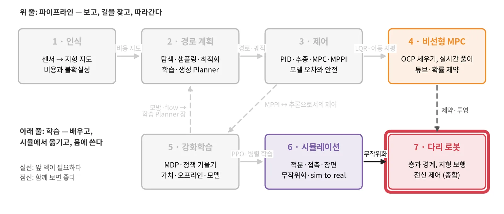
5 강화학습의 PPO, 6 시뮬레이션의 도메인 랜덤화, 1 인식의 높이 지도, 3 제어의 층 구조.
덱 전체를 '층을 어디서 나누나'로 다시 본다. 다음은 원 논문과 작은 프로젝트.
4 비선형 MPC의 제약 → 3장의 투영. 2 경로 계획의 위층 → 1장의 경계.
0 · 배경지식
지지 영역, proprioception, 강화학습, 모방이면 이 덱을 따라올 수 있다
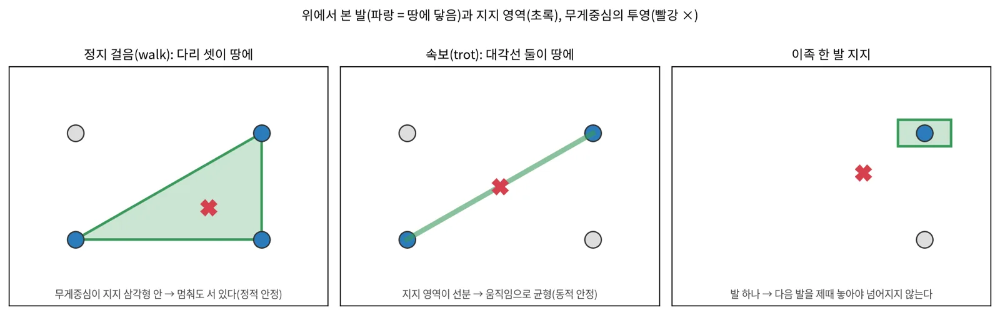
관절각·IMU(몸 안)는 늘 믿을 만하고, 깊이·LiDAR(몸 밖)는 가려지고 잡음이 있다. 보행 정책은 둘을 섞는다.
시뮬레이터 수천 개 병렬 환경에서 PPO로 관절 목표를 배우고, 도메인 랜덤화로 실물에 옮긴다.
0 · 배경지식 · 학습 보행
GPU 한 장의 병렬 학습으로 보행 정책이 몇 분 만에 나온다
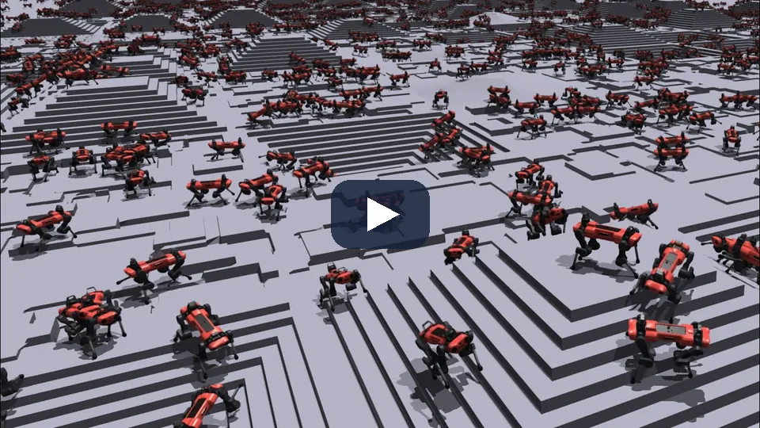
시뮬레이션과 PPO 갱신이 모두 GPU 한 장에서 돈다. 평지 정책은 4분, 험지 정책은 20분 안에 나온다. 로봇 수천 대의 분포 자체가 지형 커리큘럼이다.
공개한 legged_gym·rsl_rl이 그 뒤 4족 RL의 공통 출발점이 됐다. 이 덱의 연구 대부분이 이 절차 위에 서 있다.
Rudin·Hoeller·Reist·Hutter, Learning to Walk in Minutes Using Massively Parallel Deep RL, CoRL 2021 — arXiv:2109.11978
0 · 분야별 대세
4족과 휴머노이드는 RL이 대세, 바퀴 모바일 로봇은 고전 계획이 대세다
| 방식 | 바퀴 모바일 로봇 | 4족 보행 | 휴머노이드 |
|---|---|---|---|
| 모델 기반 제어 | 대세 경로 추종기 | 축소 MPC + RL 혼합 | 정착 MPC 위 학습 정책 |
| 탐색·샘플링 계획 | 대세 전역 A*·Smac | 정착 전역 내비, foothold 계획 | 축소 고전 footstep 계획 |
| 샘플링 MPC | 정착 Nav2 기본값 | 소수 DIAL-MPC | 부상 학계 한정 |
| RL sim-to-real | 부상 소셜·오프로드 | 대세 산업 표준 | 대세 산업 표준 |
| 모방·모션 트래킹 | 부상 | 소수 | 대세 모캡 기반 전신 제어 |
| end-to-end 학습 플래너 | 부상 NoMaD·NavDP | 부상 계층형 RL 내비 | 부상 학습형 내비 |
| 기반 모델·VLA | 부상 NaVILA·OmniVLA | 부상 상위 내비·점검 | 부상 대형 행동 모델 |
읽는 법: 대세 = 배치와 기본값에서 주류, 정착 = 널리 쓰이나 중심은 아님, 부상 = 증거가 빠르게 느는 중.
1 · 층 사이의 경계
경계를 어디에 두느냐가
연구마다 다르다
궤적, 속도, 방향, waypoint, 또는 경계 없음. 경계를 내릴수록 아래 층이 더 많이 정한다.
1 · 경계의 사다리
경계를 내릴수록 위 층이 정하는 것이 줄고 아래 층이 정하는 것이 는다
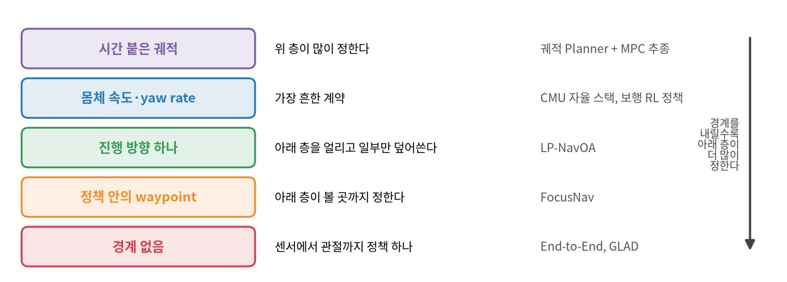
위 층을 바꿔 끼우기 쉽고 해석이 쉽다. 대신 아래 층이 명령을 해낼 수 있는지 따로 확인해야 한다.
몸의 능력을 끝까지 쓴다. 대신 학습이 어렵고, 고장 원인을 가르기 어렵다.
1 · 속도 계약
몸체가 달라도 아래 층에 넘기는 것은 속도와 yaw rate뿐이다
메카넘 바퀴, Go2, 바퀴 다리 로봇
SLAM, 경로 계획(FAR), 탐사(TARE), 기본 자율(지형 분석, 충돌 회피, waypoint 추종)의 같은 층을 세 몸체에 쓴다. 바뀌는 것은 장애물 높이 임계값, 로봇 치수 같은 설정값뿐이다.
내비 층이 몸을 몰라도 된다. 몸체를 바꿔도 같은 스택.
아래 층이 명령을 얼마나 따르는지 묻지 않는다. 보행 정책의 지연·추종 오차가 크면 예측이 틀린다.

핵심: 속도 계약을 쓰면 아래 층의 명령 추종 응답(지연, 오차)을 재서 위 층의 예측 모델에 넣어야 한다.
1 · 경계 내리기
아래 층을 고정하고 위 층이 명령의 일부만 덮어쓰거나, 볼 곳까지 정한다
고정한(frozen) 보행 정책 위의 recurrent Planner
원형 명령으로 배운 보행은 3.0 m/s까지 따랐다(고정 순서 명령 1.44 m/s). 광선 8 × 8과 목표 방향만 보고 지도는 없다. 시뮬 제시간 도달 38.3·40.3 % → 85.1·88.0 %.
waypoint를 예측하고 그 둘레만 본다
자세가 불안정하면 게이트가 먼 waypoint를 끊고 발 앞만 본다. 성공률 87.02 %(Gallant 50.32 %).

읽을 때 주의: 수치가 시뮬인지 실물 반복 시험인지, 실물은 "할 수 있다"는 확인에 그쳤는지 구별한다.
LP-NavOA arXiv:2606.23249 · FocusNav arXiv:2601.12790 · GLAD arXiv:2606.00637
1 · 학습한 로컬 내비
2D LiDAR와 목표만 보는 RL 정책 하나가 회피, 통로, 함정 탈출을 다 한다
privileged 교사 → Soft-MoE 학생
교사는 깨끗한 이력과 동적 장애물 궤적을 본다. 학생은 지연·잡음을 넣은 LiDAR 41빔 10프레임을 1D CNN, GRU, 전문가 8개 Soft-MoE로 받는다. 미분 가능한 LiDAR CBF가 몸체 속도를 고친다.
처음 보는 지도 600개에서 78.2 %
같은 지도로 다시 학습한 기준선 52.6 %. Go2 실물은 함정 탈출과 좁은 통로를 10회씩 모두 성공.
관절 동역학 없이 명령→응답 모델로 움직이는 GPU 2D 시뮬. 실물에서는 따로 학습한 보행 제어기가 같은 속도 명령을 따른다.

TAME-Nav arXiv:2610.12877 (2026-10)
1 · 장단점
경계 선택은 모듈성과 몸의 능력 사이의 트레이드오프다
| 경계 | 장점 | 단점 |
|---|---|---|
| 시간 붙은 궤적 | 위 층이 많이 정하고 해석이 쉽다 | 아래 층이 해낼 수 있는지 따로 확인 |
| 몸체 속도 | 몸을 몰라도 된다, 바꿔 끼우기 | 아래 층 응답(지연·오차)을 모른다 |
| 진행 방향(아래 층 고정) | 보행 능력을 해치지 않는다 | 위 층이 할 수 있는 일이 좁다 |
| 정책 안의 waypoint | 볼 곳을 스스로 고른다 | 고장 원인 가르기 어렵다 |
| 경계 없음 | 몸의 능력을 끝까지 | 학습 비용, 검증 어려움 |
어느 경계든: 아래 층의 명령 추종 응답을 재서 위 층의 예측에 넣는다.
2 · 지형을 보는 보행
어디를 보느냐가
얼마나 보느냐보다 중요하다
교사는 많이 보고, 학생은 배포 때 볼 수 있는 것만 본다.
2 · 배경지식 · teacher–student 증류
교사는 정답을 보고 RL로 배우고, 학생은 센서만 보고 교사를 따라 한다
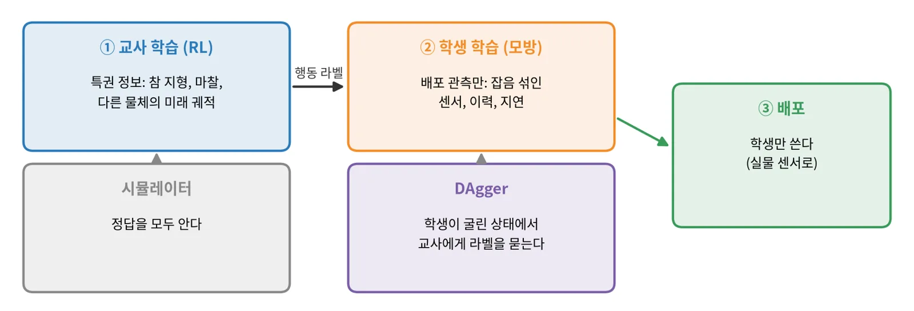
RL은 쉬운 문제(완전 관측)로 풀고, 어려운 부분(부분 관측)은 지도학습으로 푼다.
교사가 본 정보를 학생이 끝내 추론하지 못하면 격차가 남는다. 교사의 행동이 학생에게 불가능할 수 있다.
DAgger로 학생 분포에서 라벨을 받고, 증류 손실과 RL 손실을 섞어 쓴다. 증류 손실 가중치는 천천히 줄인다.
2 · 배경지식 · teacher–student의 대표 사례
teacher–student로 배운 ANYmal이 산길·눈·동굴을 걷는다
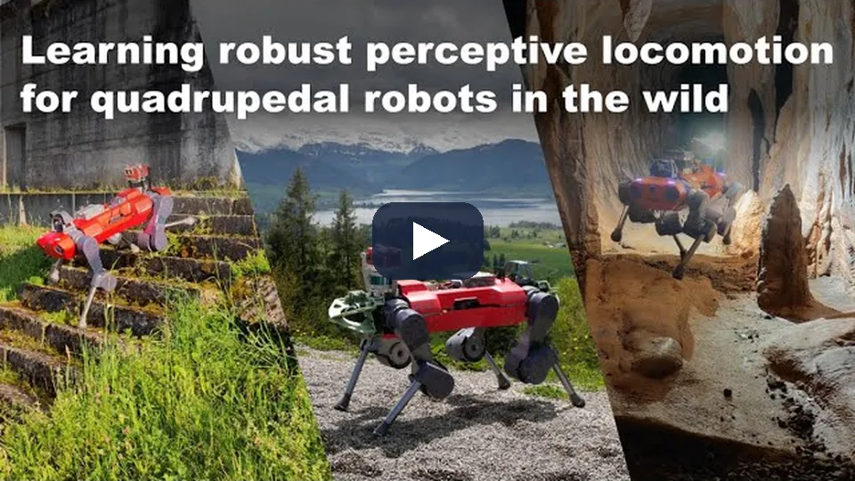
교사는 시뮬의 정답 지형을 보고 RL로 배운다. 학생은 잡음 모델을 거친 높이 샘플 208개와 proprioception만 보고 교사를 따라 한다.
눈·수풀·반사로 높이 지도가 틀리면 attention gate가 닫혀 proprioception 보행으로 물러난다. 여러 계절의 배치에서 넘어진 적이 없다.
Miki·Lee·Hwangbo·Wellhausen·Koltun·Hutter, Learning robust perceptive locomotion for quadrupedal robots in the wild, Science Robotics 2022 — arXiv:2201.08117
2 · 볼 곳 고르기
다음 foothold 둘을 먼저 예측하고, 정책은 그 두 곳의 지형만 본다
proprioception 70차원 → 다음 foothold 둘
은닉층 둘의 작은 MLP. 지도를 보지 않는다. 정책을 rollout해 얻은 실제 착지 위치로 주기적으로 처음부터 다시 학습한다.
두 곳의 7 × 7 조각만
전체 지도 693칸이 102값으로 준다. 전체 지도는 학습 때 critic만 본다.
| 지표 | 볼 곳 선택 | attention 인코더 | 전체 지도 |
|---|---|---|---|
| 레벨 5 도달(iteration) | 7.5k | 20.0k | 26.1k |
| foothold 드문 지형 성공 | 74.2 % | 71.7 % | 42.7 % |

핵심: 같은 수의 높이를 명령 방향 앞 고정 격자에서 뽑은 기준선은 전체 지도보다도 나빴다. 성능을 가른 것은 양이 아니라 위치다.
Watch Your Step — ETH RSL, arXiv:2610.29612
2 · 볼 곳 고르기 · 실물
실물 G1이 예측한 foothold를 따라 계단·틈·낙차를 지난다
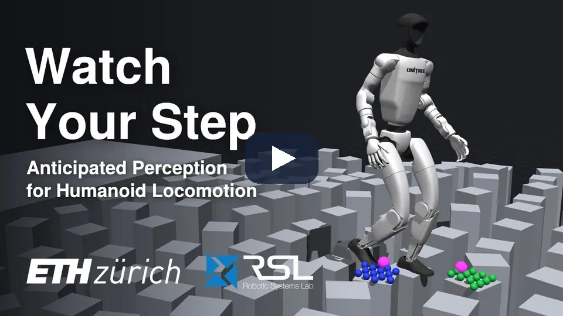
자홍색 점이 예측기가 낸 다음 foothold 둘이고, 파랑·초록 점이 정책이 보는 7 × 7 패치다. 정책은 그 두 곳의 높이만 본다.
0.55 m 틈과 0.6 m 낙차는 학습에 없던 지형이다. 틈 앞에서는 보상에 넣지 않은 감속과 몸 낮추기가 나타났다.
Watch Your Step — Heyrman·C. Li·Dadiotis·Hutter, ETH RSL·ETH AI Center, arXiv:2610.29612
2 · 성긴 센서로 걷기
머리에 단 LiDAR 한 대로도 계단과 실외를 걷는다
| 연구 | 센서 | 지도 | 정책 | 결과 |
|---|---|---|---|---|
| 전방향 계단 보행 | 머리 LiDAR(Mid-360) | 신뢰도가 시간·거리에 따라 줄어드는 누적 점군 지도, U-Net으로 정제 | 단일 단계 RL, 조밀한 "위험 foothold" 페널티 | 시뮬 안전 foothold 거의 100 %, 실외 장거리 |
| PolygMap | LiDAR + RGB-D + IMU | 계단 평면을 다각형 의미 지도로 | 다각형 위 foothold 계획, 20–30 Hz | 실내외 계단 |
| 지형 인식 보행 + world model | 높이 지도 | 정보 병목 world model이 잡음을 거른다 | teacher–student 모방 | 도시·오프로드 2 km 개입 없이 |
빈 곳을 네트워크가 채운다. 그럴듯하지만 틀릴 수 있다.
평면을 맞춰 다각형으로. 계단에 강하고 해석 쉽다.
latent 공간에서 센서 잡음을 거른다. 무엇을 거르는지 보기 어렵다.
2 · 성긴 센서로 걷기 · 지도 만들기
성긴 LiDAR 점을 신뢰도로 걸러 발밑 높이 지도를 만든다
머리의 Mid-360 점군을 오도메트리 좌표에 10 Hz로 누적하되, 점마다 시간에 따라 신뢰도를 줄여 오래된 점과 잔상을 걸러 낸다.
몸통 바로 밑은 LiDAR 사각지대라 새 점이 들어오지 않는다. 그 원기둥 안의 점은 신뢰도를 최대로 고정해 제자리걸음에서도 발밑을 잃지 않는다.
제어용 국소 지도(1.4 m × 1.0 m, 0.05 m 격자, 50 Hz 이상)의 빈 칸은 가장자리를 안내 신호로 쓰는 U-Net(EGAU)이 채운다.
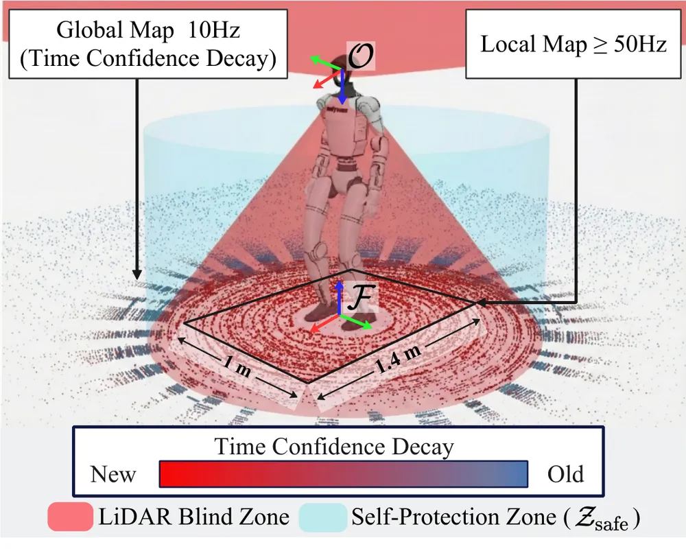
전방향 계단 보행 — arXiv:2603.07928 (2026-03), Unitree G1 + Livox Mid-360
2 · 깊이로 파쿠르
깊이 영상을 보는 정책 하나가 2D 속도 명령만 받아 1.25 m 벽을 오른다
motion matching → 기술 교사 → 깊이 학생
사람 파쿠르 동작을 로봇에 옮기고 motion matching으로 "보행, 기술, 보행"을 잇는다. 기술마다 높이 스캔을 보는 교사를 배우고, 깊이 영상만 보는 학생 하나로 DAgger + PPO 증류한다.
벽 1.25 m(키의 96 %)를 3.63 s에
0.4 m 장애물을 0.8 s 안에, 장애물 여럿을 이어 넘었다. 학습 데이터에는 장애물이 하나인 궤적만 있었다.
DAgger 손실 가중치를 학습 앞 절반 동안 1에서 0.1로 내리고, 끝까지 작게 남긴다. 아예 빼면 떨리는 행동이 생겼다.

Perceptive Humanoid Parkour — RSS 2026, arXiv:2602.15827
2 · 깊이로 파쿠르 · 실물
깊이 영상만 보는 G1이 사람의 파쿠르 기술을 이어서 해낸다
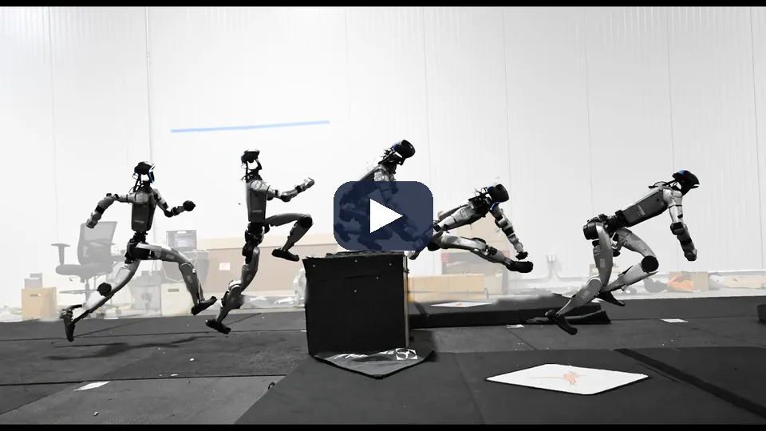
정책이 받는 명령은 이산 2D 속도뿐이다. 어느 기술을 쓸지, 어디서 도약할지는 깊이 영상을 보고 정책이 스스로 정한다.
학습 데이터에는 장애물이 하나인 궤적만 있었지만, 실물은 48–60 s 동안 장애물 여럿을 이어 넘었다. 사람이 장애물을 약 0.5 m 옮겨도 접근을 고쳤다.
Perceptive Humanoid Parkour — Wu 외, Amazon FAR·UC Berkeley·CMU·Stanford, RSS 2026, arXiv:2602.15827
2 · 처음 보는 몸
로봇 10만 대로 배운 정책 하나가 처음 보는 몸에 몇 초 만에 적응한다

과제 공간과 컨텍스트를 넓힌다
이족·4족과 바퀴형을 절차 생성하고 관성·게인·관절 한계를 크게 랜덤화. 컨텍스트를 수십 초로 늘리고 시도 사이에 기억을 넘긴다(메타 RL).
처음 보는 10종에서 0.96
로봇마다 따로 배운 전문가 0.99. 실물에서 무릎 고정, 바퀴 잠금, 종아리 절단에도 몇 초–수십 초 안에 다시 걸었다.
배경: 적응은 "환경을 이력에서 추정"(RMA)에서 "몸 자체를 이력에서 추정"으로 넓어졌다.
LocoFormer — Skild AI, CoRL 2025, arXiv:2509.23745
2 · 처음 보는 몸 · 실물
정책 하나가 처음 보는 몸체와 고장에 몇 초 만에 적응한다
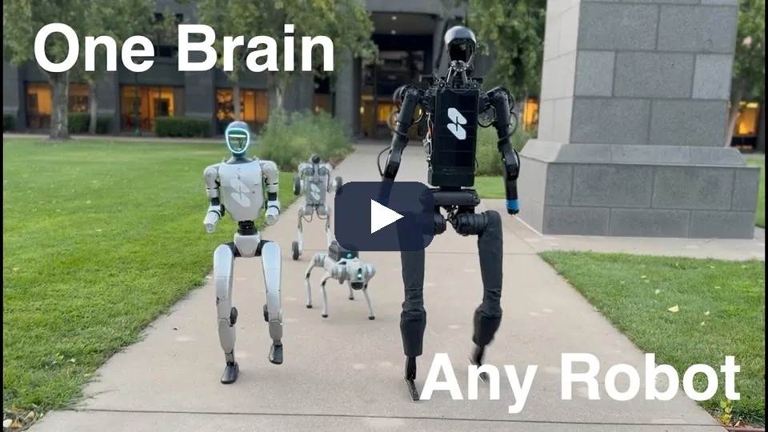
몸체 정보는 입력에 없다. 관절 수·길이·질량을 모른 채 몇 초의 경험만으로 몸을 알아낸다.
이족 모드에서 시도 1·2는 넘어지고 시도 3에서 선다. 넘어진 시도를 기억해 다음 시도를 고치는 메타 RL 구조다.
LocoFormer — Min Liu·Deepak Pathak·Ananye Agarwal, Skild AI, CoRL 2025, arXiv:2509.23745
2 · 두 갈래
처음 보는 몸은 설명으로 줄 것인가, 이력에서 읽을 것인가
| 갈래 | 연구 | 핵심(조건) |
|---|---|---|
| 이력에서 읽는다 | GenLoco (CoRL 2022) | 이력 15스텝 + 형태 랜덤화, 실물 Mini Cheetah |
| 이력에서 읽는다 | AdA (DeepMind 2023) | Transformer-XL + 여러 시도로 새 과제에 적응 |
| 이력에서 읽는다 | AnyCar (ICRA 2025) | 이력 transformer 순동역학 + MPPI, 처음 보는 차량 추종 |
| 몸 설명을 준다 | URMA, Embodiment Scaling Laws | 관절 설명 attention, 1,012대 전문가 증류 |
| 몸 설명을 준다 | COMPASS (2025) | 속도 계약 위의 여러 몸체 정책 하나 |
| 후속 | Rapid Embodiment Adaptation (2026) | 짧은 이력의 명시적 식별, LocoFormer식 기준선을 이겼다 |
| 후속 | PolyMorph (2026) | URDF 토큰, GPU 한 장 약 2.7일 |
장점 몸 정보가 없어도, 고장에도 적응. 단점 학습이 비싸고 무엇을 추정했는지 보이지 않는다.
장점 추정값을 사람이 읽고 검증. 단점 설명에 없는 변화(고장)에 약하다.
GenLoco 2209.05309 · AdA 2301.07608 · URMA 2409.06366 · AnyCar 2409.15783 · COMPASS 2502.16372 · Rapid Embodiment Adaptation 2608.01506 · PolyMorph 2610.19615
3 · 전신 제어와 투영
사람 동작을 지형에 맞추고,
출력은 해낼 수 있는 집합으로 옮긴다
모방은 출발점이고, 로봇의 실제 실행과의 틈은 플래너·추종기·투영 중 한 곳에서 메운다.
3 · 배경지식 · 리타기팅
사람 동작을 로봇 몸에 옮기는 리타기팅이 모방의 첫 단계다

가장 단순. 몸 비율이 다르면 발 미끄러짐·관통.
손발 위치, 접촉, 관절 한계를 맞춘다. 표준적인 방법.
시뮬에서 RL 추종기가 따라가 물리적으로 가능한 동작만 남긴다.
3 · 플래너에서 메우기
사람 동작으로 flow 플래너를 배우고, 범용 추종기가 실행한다
VR로 장애물 장면을 지나간 100시간
장면 1,500개, 증강해 약 1,000시간. flow 플래너가 6.25 Hz로 0.5 s 앞 전신 기준 동작을 내고, 지형을 보는 추종기가 50 Hz로 관절 29개를 낸다.
시뮬 98.7 %, 실물 50/50
처음 보는 장면 150개 성공 98.7 %, 무접촉 70.3 %. 실물은 Orin 하나로 50/50 도달, 45/50 무접촉.
실시간 청킹(RTC), RL post-training, 퍼텐셜장 손실을 각각 빼면 무접촉 성공이 20–26 %로 무너졌다.

PASSAGE — arXiv:2609.18732
3 · 추종기에서 메우기
운영자는 평지에서 움직이고, 로봇은 깊이 영상으로 동작을 지형에 맞춘다
평지 동작 → 지형 위 동작 자동 변환
손발 접촉을 판정하고 지형 높이로 골반을 옮긴 뒤 IK와 관통 보정, 시간 보간. 공개 동작 데이터 넷으로 약 1,000시간.
높이 지도 교사 → 깊이 32 × 18 학생
교사는 높이 지도를 보고 PPO로, 학생은 평지 기준 동작 창, proprioception, 깊이 한 장만 보고 DAgger로.
위 층(운영자)은 지형을 모르는 명령을 내고, 아래 층이 국소 인식으로 맞춘다.

NEXUS — arXiv:2609.39000
3 · 추종기에서 메우기 · 실물
운영자는 평지에 서 있고, G1은 계단과 단 위에서 같은 동작을 한다
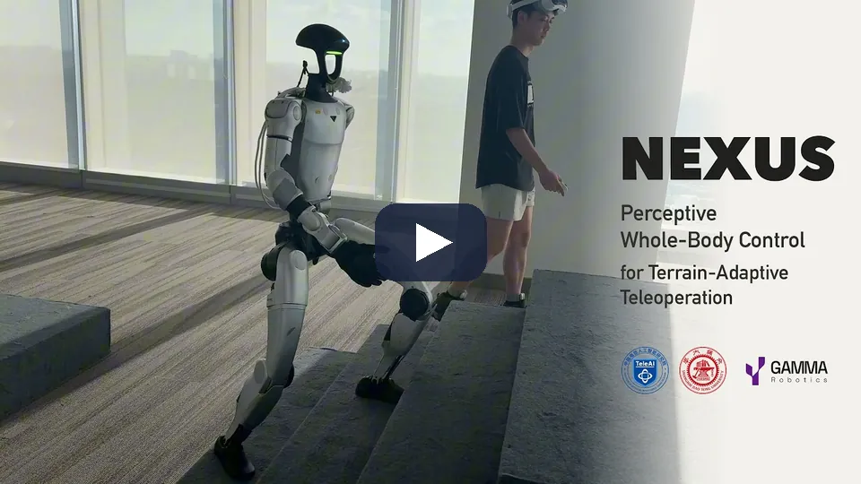
운영자의 동작에는 지형 정보가 없다. 정책은 평지 동작 13프레임과 깊이 영상 32 × 18만 받아 Orin NX에서 50 Hz로 돈다.
학습 지형은 10 cm 계단과 약 16.7° 경사뿐이었다. 실물에서는 15 cm 계단과 약 30° 풀밭 경사를 fine-tuning 없이 지났고, 60 cm 단과 옆돌기 일부 시도에서 넘어졌다.
NEXUS — Miao 외, arXiv:2609.39000, nexus-humanoid.github.io
3 · 투영에서 메우기
학습 정책의 출력은 실행 전에 해낼 수 있는 집합으로 투영한다
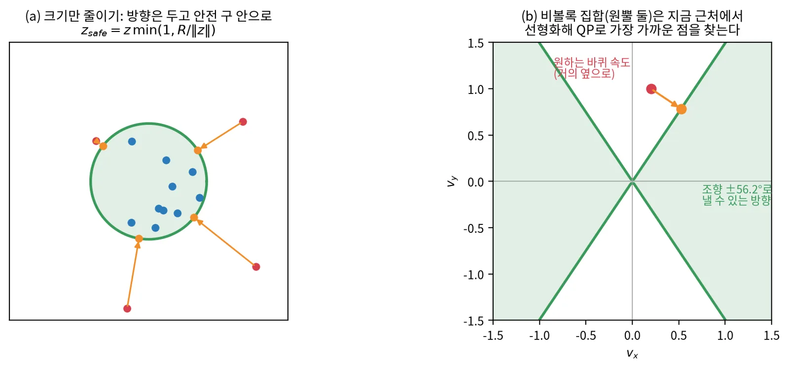
| 투영하는 곳 | 연구 | 방법 | 결과 |
|---|---|---|---|
| 동역학 변수 | PADP (RA-L 2026) | 관절 행동을 동역학·접촉을 지키는 전신 변수로 + 전신 QP | 4족 조작기 두 몸체 |
| 숙련 영역 | CMP (CoRL 2026) | latent 명령 크기를 안전 구 안으로 | 실물 분포 밖 86.7 %(Neural CBF 40 %) |
| 공통 latent | FIBER | 기술 정책들을 공통 latent 명령으로 + flow Planner | 시뮬 42.0 %(운동학 계획 3.5 %) |
3 · 장단점
사람 데이터와 로봇 실행 사이의 틈을 어디서 메우느냐가 갈린다
| 메우는 곳 | 예 | 장점 | 단점 |
|---|---|---|---|
| 플래너 | PASSAGE | 장면에 맞는 동작을 생성 | 장면 데이터 수집이 비싸다 |
| 추종기 | NEXUS | 위 층은 지형을 몰라도 된다 | 추종기가 못 맞추면 끝 |
| 투영 | PADP, CMP | 재학습 없이 안전하게 | 목표를 덜 이룬다, 비볼록 집합 |
| 층마다 RL | Flexion, Dyna | 층 사이 오차까지 학습으로 줄인다 | 학습 비용, 검증 어려움 |
공통: 사람 동작·영상으로 시작하고, 시뮬 RL과 teacher–student로 로봇의 실제 실행에 맞춘다.
4 · 장시간 자율
단계마다 거의 1의 신뢰도가
있어야 긴 작업이 끝난다
임무 모델, 운동 층, 전신 제어의 세 층을 쌓고, 실패는 층마다 복구한다.
4 · 단계 신뢰도
긴 작업의 완주 확률은 단계 신뢰도의 n제곱으로 떨어진다
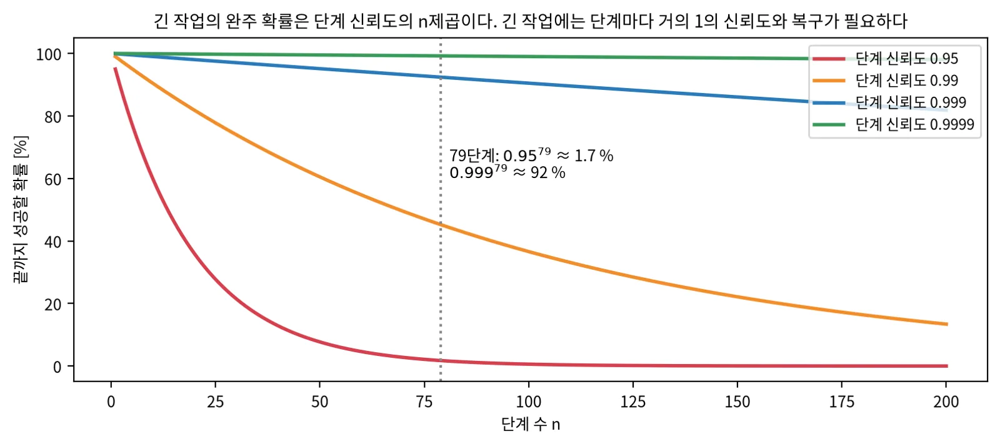
실패한 단계를 다시 하면 그 단계의 실효 신뢰도가 오른다.
운동 층이 먼저 다시 하고, 안 되면 임무 층이 다시 계획한다.
다음 단계로 가기 전에 앞 단계가 끝났는지 눈으로 확인한다.
4 · 세 층 구조 1
임무 VLM, 운동 층, 전신 제어기의 세 층을 RL로 fine-tuning한다
1인칭 영상을 보며 도구를 하나씩 부른다
전역 이동, 물체로 이동 같은 도구를 부르고, 의미 지도에 문장으로 장소를 묻는다.
VLA와 RL 기술이 짧은 궤적을 낸다
RL 기술은 대부분 시뮬에서 타깃 랜덤화로 배웠다.
궤적을 모터 명령으로
힘을 고려하는 전신 제어기. 구조는 공개되지 않았다.
회사 발표: 16단계 임무를 실수 없이 끝까지 간 비율 SFT 38 % → SFT+RL 90 %. 논문·코드 없음.

Flexion Reflect v1.0 — flexion.ai 회사 블로그(2026-06), 논문·코드 없음
4 · 세 층 구조 1 · 시연
지시 한 문장으로 계단, 승강기, 상자 풀기, 서랍 채우기를 이어서 한다
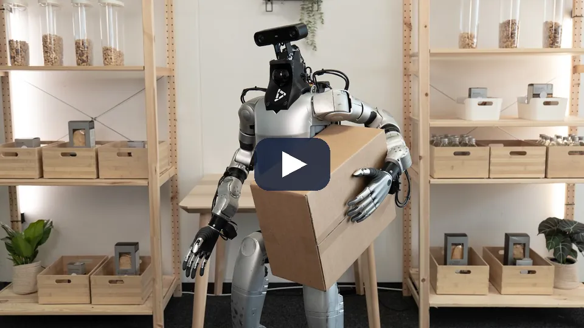
임무 VLM이 1인칭 영상을 보며 전역 이동, 물체로 이동 같은 도구를 하나씩 부른다. 운동 층의 RL 기술과 VLA가 짧은 궤적을 내고 전신 제어기가 따른다.
회사 발표 영상이다. 16단계 임무 90 %의 시도 수와 평가 환경은 적지 않았고, 논문·코드가 없다.
Flexion Reflect v1.0 — flexion.ai 회사 블로그(2026-06-29), 논문·코드 없음
4 · 세 층 구조 2
조향 바퀴 네 개 베이스 위의 반휴머노이드가 한 시간짜리 작업을 끊지 않는다
바퀴 베이스 + 사람 모양 상체
접히는 하체 아래에 조향 바퀴 네 개 베이스, 7자유도 팔 둘.
VL 오케스트레이터 → 행동 모델 → 전신 제어
행동 모델(약 5 Hz)이 작업 공간 궤적을, 시뮬 RL 전신 제어기(100 Hz)가 따른다. 층 사이는 손목·팔꿈치·가슴·발자국 자세 표현으로 잇는다.
고객 인수 시험 87 %
사람 영상 100만 시간 사전학습, 처음 보는 현장 zero-shot 87 %(이전 판 46 %). 호텔 세탁 한 시간을 끊지 않았다.
층 사이를 잇는 표현(자세 키포인트)을 명시적으로 정하면 층마다 따로 학습·교체할 수 있다.
회사 블로그 발표이고 논문이 없다. 조건과 반복 수를 확인할 수 없다.
Dyna Robotics DYNA-2.1 — dyna.co 기술 블로그(2026-09), 논문 없음
4 · 세 층 구조 2 · 시연
호텔 세탁실 작업 한 시간을 끊지 않고 혼자 이어 간다
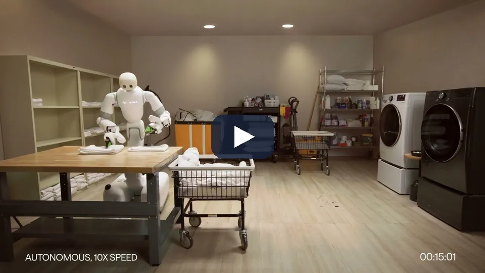
VL 오케스트레이터가 작업 흐름을 정하고, 행동 모델(약 5 Hz)이 작업 공간 궤적을, 시뮬 RL 전신 제어기(100 Hz)가 모터 명령을 낸다. 층 사이는 손목·팔꿈치·가슴·발자국 자세 표현으로 잇는다.
회사 발표 영상이다. 조건과 반복 수를 확인할 수 없고 논문이 없다.
Dyna Robotics DYNA-2.1 — dyna.co 기술 블로그(2026-09), 논문 없음
5 · 정리
교사는 많이 보고, 학생은 배포 때 보는 것만 보고,
층 사이는 맞춘다
비교표, 공통점과 차이점, 장단점, 공부 순서.
5 · 비교표
입력은 LiDAR·높이 지도·깊이로, 넘기는 것은 속도 쪽이 많다
| 연구 | 로봇 | 지형 입력 | 위 층이 넘기는 것 | 핵심 수치(조건이 서로 다름) |
|---|---|---|---|---|
| TAME-Nav | Go2 | 2D LiDAR 41빔 | 몸체 twist | 처음 보는 지도 78.2 % |
| LP-NavOA | G1 | 광선 8 × 8 | 진행 방향 | 제시간 도달 85–88 %(시뮬) |
| FocusNav | G1 | LiDAR + 깊이 BEV | 정책 안 waypoint | 성공 87.02 % |
| Watch Your Step | G1 | foothold 둘레 102값 | 속도 명령 | foothold 드문 지형 74.2 % |
| PHP | G1 | 깊이 영상 | 이산 2D 속도 | 1.25 m 벽 3.63 s |
| PASSAGE | G1 | 높이 지도 | 전신 기준 동작 | 시뮬 98.7 %, 실물 50/50 |
| NEXUS | G1 | 깊이 32 × 18 | 평지 기준 동작 | 어려운 지형 51.9 % |
| LocoFormer | 여러 몸 | proprioception | 속도 명령 | 처음 보는 10종 0.96 |
5 · 공통점과 차이점
증류와 층 나누기를 함께 하고, 경계와 검증 깊이에서 갈린다
privileged 교사 → 배포 관측 학생
정답 상태를 보는 교사를 센서만 보는 학생으로 증류한다.
층을 나누고 사이를 맞춘다
플래너와 추종기를 서로에게 맞춰 학습하거나, 출력을 투영한다.
경계의 높이
궤적, 속도, 방향, waypoint, 기준 동작, 경계 없음.
검증의 깊이
반복 실물 시험(10/10, 50/50), 실행 가능성 확인, 회사 시연이 섞여 있다.
읽는 법: 반복 실물 시험, 시뮬 통계, "할 수 있다" 확인, 회사 발표를 같은 무게로 읽지 않는다.
5 · 장단점 표
다리 로봇 내비게이션의 설계 선택을 한 표로 정리한다
| 선택 | 한쪽 | 다른 쪽 |
|---|---|---|
| 경계 | 높게(궤적·속도): 모듈성, 해석 | 낮게(waypoint·없음): 몸의 능력, 학습 비용 |
| 지형 입력 | 높이 지도: 기하 명확, 지도 품질에 의존 | 깊이·LiDAR 직접: 지연 짧음, 학습이 해석을 맡음 |
| 볼 곳 | 넓게: 옆 장애물까지 | 골라서(foothold 둘레): 빠른 학습, 옆을 늦게 봄 |
| 학습 절차 | RL 단독: 단순 | teacher–student: 부분 관측에 강함, 두 단계 |
| 몸 적응 | 이력에서 읽기: 고장에도 적응 | 명시적 식별·설명: 읽고 검증 가능 |
| 실행 가능성 | 학습에 맡김: 단순 | 투영·필터: 보장, 목표를 덜 이룸 |
5 · 흔한 함정
위 층의 명령을 아래 층이 해낼 수 있는지부터 확인한다
아래 층 응답을 모름
속도 명령을 보내도 보행 정책은 늦게, 일부만 따른다. 응답을 재서 위 층에 넣는다.
교사 정보의 누출
학생이 추론할 수 없는 정보(미래 궤적)를 교사가 쓰면 격차가 남는다.
볼 곳을 너무 좁힘
발밑만 보면 옆에서 오는 사람을 늦게 본다. 동적 장애물은 따로.
단계 신뢰도 과신
95 % 단계를 쌓으면 긴 작업은 거의 실패한다. 복구를 설계한다.
검증 깊이 혼동
한 번의 시연을 반복 시험처럼 읽는다.
비볼록 실행 집합
조향 한계 같은 제약을 박스 제약으로 근사하면 못 하는 명령을 낸다.
5 · 공부 순서
보행 RL의 기본 절차를 먼저 익히고, 층과 경계로 논문을 읽는다
보행 RL의 표준 절차
대규모 병렬 학습(Rudin 외 2021) → RMA(이력에서 적응) → teacher–student 지형 보행(Miki 외 2022).
공개 코드로 직접
Isaac Lab·legged_gym의 4족 예제 → 높이 지도 관측 추가 → teacher–student 증류 한 번.
층과 경계로 읽기
CMU 스택 → TAME-Nav → Watch Your Step → PHP → PASSAGE·NEXUS → LocoFormer.
| 이 덱의 장 | 스스로 확인할 질문 |
|---|---|
| 1 경계 | 경계를 내리면 무엇을 얻고 잃나? 속도 계약의 숨은 가정은? |
| 2 지형 | teacher–student는 왜 RL 단독보다 쉬운가? 볼 곳을 고르면 왜 빨라지나? |
| 3 전신 | 사람 동작과 로봇 실행의 틈을 메우는 네 자리는? |
| 4 장시간 | 79단계 작업을 끝내려면 단계 신뢰도가 얼마여야 하나? |
Rudin 외 arXiv:2109.11978 · Kumar 외, RMA arXiv:2107.04034 · Miki 외, Learning robust perceptive locomotion, Science Robotics 2022
정리
경계를 정하고, 실행 가능성을 맞추고, 볼 곳을 고른다
경계
궤적·속도·방향·waypoint·없음. 높을수록 모듈성, 낮을수록 몸의 능력.
계약 확인
아래 층의 명령 추종 응답을 재서 위 층의 예측에.
학습 절차
privileged 교사 → 배포 관측 학생, DAgger, 증류 손실 가중치는 천천히.
볼 곳
양보다 위치. 곧 밟을 곳을 고르고, 옆의 사람은 따로.
실행 가능성
사람 데이터와 로봇 실행의 틈은 플래너·추종기·투영 중 하나에서.
긴 작업
pⁿ으로 떨어진다. 복구와 확인을 층마다.
참고문헌 1/2 · 먼저 읽을 것
처음에는 이 다섯 가지만 읽는다
| 순서 | 문헌 | 왜 먼저 읽나 |
|---|---|---|
| ★ 1 | Raibert, Legged Robots That Balance (MIT Press 1986) | 균형과 보행의 고전 |
| ★ 2 | Rudin 외, Learning to Walk in Minutes 2109.11978 | 병렬 RL 보행의 표준 절차 |
| ★ 3 | Kumar 외, RMA 2107.04034 | 이력에서 환경을 추정하는 적응 |
| ★ 4 | Miki 외, Learning robust perceptive locomotion 2201.08117 | teacher–student 지형 보행 |
| ★ 5 | Hwangbo 외, Learning agile and dynamic motor skills 1901.08652 | actuator network로 sim-to-real |
참고문헌 2/2 · 장별
기초와 장별 원 논문
기초 — Raibert (1986) · Rudin 외 2109.11978 · RMA 2107.04034 · Miki 외 2201.08117 · Hwangbo 외 1901.08652
경계 — CMU 탐사 개발 환경 2110.14573 · FAR Planner 2110.09460 · TARE (RSS 2021) · LP-NavOA 2606.23249 · FocusNav 2601.12790 · GLAD 2606.00637 · TAME-Nav 2610.12877
지형 보행 — Watch Your Step 2610.29612 · PHP 2602.15827 · LocoFormer 2509.23745 · GenLoco 2209.05309 · AdA 2301.07608 · AnyCar 2409.15783 · URMA 2409.06366
전신·투영 — PASSAGE 2609.18732 · NEXUS 2609.39000 · PADP (RA-L 2026) · CMP 2604.07457 · FIBER 2610.24675
장시간 — Flexion Reflect v1.0 · Dyna DYNA-2.1 (둘 다 회사 발표)
몸 적응 — Rapid Embodiment Adaptation 2608.01506 · PolyMorph 2610.19615 · COMPASS 2502.16372